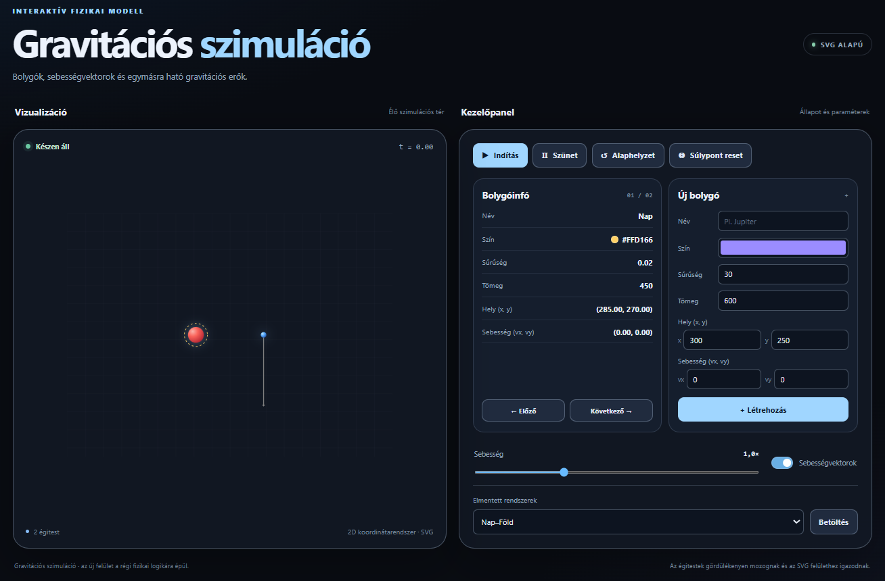

Polárvektor elforgatása
A polárvektor szögéhez adj hozzá egy fokban megadott elfordulást. Új PolarVektor objektumot adj vissza.
Egészítsd ki a gravitációs szimuláció hiányzó JavaScript-metódusait! A megjelenítő és a kezelőfelület készen áll: a feladatod a vektorműveletek, az égitestek mozgása és a gravitációs kölcsönhatások megvalósítása.
Az egyes fájlokban a feladatok számozása külön indul. A megadott metódusneveket és paramétereket ne változtasd meg. Törekedj rövid, áttekinthető, újrahasznosítható megoldásokra!

A program kétdimenziós térben égitesteket jelenít meg. Minden égitestnek van tömege, sűrűsége, pozíciója és sebessége. A gravitáció megváltoztatja a sebességeket, az égitestek mozognak, ütközéskor pedig összeolvadhatnak. A feladatod a forráskódban számozott, hiányzó metódusok megírása.
A letöltendő kiindulófájlok a fajlok/ mappában vannak:
gravitacio.html
fájlt böngészőben.
// N. feladat
megjegyzések helyén dolgozz. A feladatok számozása
fájlonként újrakezdődik
.
vektor.js
műveleteit készítsd el; ezekre épül az
egitest.js
és a
galaxis.js
.
A kiinduló projektben a hiányzó megoldások szándékosan nincsenek kitöltve. Az összeolvadás ideiglenes értékei csak a szintaktikai hibát előzik meg, nem helyes megoldások.
vektor.js
Valósítsd meg a Descartes- és polárkoordinátás vektorok műveleteit. A statikus és példánymetódusos változatok külön feladatok. Figyelj arra, melyik metódus módosítja az eredeti objektumot!
A polárvektor szögéhez adj hozzá egy fokban megadott elfordulást. Új PolarVektor objektumot adj vissza.
A szög és a hossz alapján állítsd elő az x és y koordinátákat. A trigonometrikus függvények radiánt várnak.
Készíts radián–fok átváltó függvényt.
Készíts fok–radián átváltó függvényt.
A statikus plus(u,v) adjon vissza új vektort, az eredetiek változatlanok maradjanak.
A hozzaad(that) módosítsa a saját vektor koordinátáit, és adja vissza a módosított objektumot.
A csokkent(that) csökkentse a saját koordinátákat a másik vektor koordinátáival.
A Vektor.minus(u,v) készítsen új vektort.
Az u.minus(v) új vektort adjon vissza, és ne módosítsa az u-t.
Készítsd el a Vektor.ellentett(u) műveletet.
A v.ellentett() új vektort adjon vissza.
A statikus balraforgat90(u) új vektort adjon vissza.
A v.balraforgat90() változatot is készítsd el.
A statikus jobbraforgat90(u) új vektort adjon vissza.
A v.jobbraforgat90() változatot is készítsd el.
A Vektor.szor(u,a) az u vektor minden koordinátáját szorozza a-val, új vektort visszaadva.
A v.szor(a) is új vektort adjon vissza.
A v.oszt(a) új vektort adjon vissza; gondolj a nullával osztásra.
A Vektor.oszt(u,a) is működjön.
A to_polar() számítsa ki a vektor hosszát és irányszögét fokban.
Számítsd ki a vektor euklideszi hosszát.
Számítsd ki a vektor hosszának négyzetét négyzetgyökvonás nélkül.
A Vektor.forgatott(u,fok) készítsen új, elforgatott vektort.
A v.forgatott(fok) is új vektort adjon vissza.
A v.egysegvektora() a v irányába mutató, 1 hosszúságú vektort adjon vissza; kezeld a nullvektort.
A masolat() azonos koordinátájú, de különálló Vektor objektumot hozzon létre.
egitest.js
Az égitest pozíciója és sebessége
Vektor
típusú. A számított értékeket a meglévő SVG-objektumokon kell megjeleníteni.
A pozícióhoz add hozzá a sebességvektort, majd hívd meg a frissit() metódust.
Két égitest akkor ütközik, ha a középpontjaik távolsága kisebb, mint sugaraik összege.
Számítsd ki az új tömeget, a tömeggel súlyozott pozíciót és sebességet, az új nevet, színt és sűrűséget; hozd létre az új Egitest objektumot. A megadott lista- és SVG-kezelő kódhoz igazodj.
Adj pozitív sugarat a tömeg és a sűrűség alapján. A választott összefüggést indokold.
Számítsd ki a két test egymásra gyakorolt vonzó hatását, és adj vissza két ellentétes irányú vektort. A mozgás frissítéséhez a tömegekkel osztott gyorsulásváltozásokra van szükség.
F = G·m₁·m₂/r²
. A sebesség módosításához a testre ható erőt a saját tömegével osztva gyorsulást kapunk, majd az időlépéssel szorozzuk. A program egyszerűsített diszkrét modellt használ; a két test sebességváltozása nem pusztán két azonos hosszúságú, ellentétes vektor.
galaxis.js
Az egyes égitestek helyett most az egész rendszeren végzel műveleteket. Különösen ügyelj a párok egyszeri feldolgozására és az összeolvadás közben változó listára.
Minden égitest pozícióját told el ugyanazzal a vektorral, majd frissítsd az SVG-t.
Add vissza a pozícióvektorok számtani átlagát. Itt nem tömegközéppontot számolunk.
Minden rendezetlen égitestpárt vizsgálj meg egyszer. Ütközéskor olvaszd össze a testeket; ügyelj a lista közbeni módosítására.
Minden égitestpárra hívd meg a gravitacios_kolcsonhatas_parra() metódust, és frissítsd mindkét test sebességét.
Hívd meg minden égitestre a mozogj() metódust.
Állítsd a gravitációs állandót 0-ra, majd pozitív értékekre. Hasonlítsd össze az égitestek mozgását!
A Nap–Föld rendszerben módosítsd a Föld kezdősebességét. Keress közel körpályát, majd olyan sebességet, amelynél az égitest eltávolodik.
Ütközés előtt és után add össze a rendszer égitestjeinek tömegét. Egyezik-e a két összeg?
Hozz létre legalább három égitestet. Kísérletezz olyan kezdőpozíciókkal és sebességekkel, amelyeknél a rendszer tartósan mozgásban marad.
Próbáld ki a vektorműveleteket a böngésző konzoljában. Néhány ellenőrizhető eredmény:
Vektor.plus(new Vektor(2, 3), new Vektor(4, -1)) // (6, 2)
new Vektor(3, 4).hossz() // 5
new Vektor(3, 4).hossznegyzet() // 25
new Vektor(3, 4).egysegvektora() // (0.6, 0.8)
new Vektor(5, -2).ellentett() // (-5, 2)
to_degree(Math.PI) // 180Ezután töltsd be a Nap–Föld, a Nyolcasrendszer és az Ütközések előre beállított rendszereket. Vizsgáld meg a mozgást, az ütközéseket, az alaphelyzet visszaállítását és a sebességvektorok megjelenítését.
A teljes projektmappát add be, benne a módosított
vektor.js
,
egitest.js
és
galaxis.js
fájlokkal. A HTML, a CSS és a kezelőfelületet működtető JavaScript maradjon a projektben. A kipróbálási feladatok tapasztalatait röviden foglald össze.
A feladatok a projekt forráskódjában szereplő számozást követik. A kiinduló alkalmazás nem tartalmaz pályanyomvonal-rajzolást.